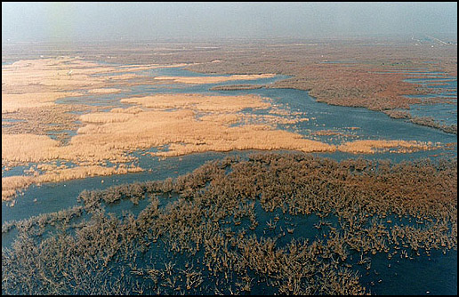

Το Δέλτα Έβρου ανήκει στους υγροτόπους διεθνούς σημασίας της Σύμβασης Ραμσάρ (Ν.Δ. 191/1974), είναι Περιοχή Ειδικής Προστασίας (Οδηγία 79/409/ΕΟΚ), αποτελεί Σημαντική Περιοχή για τα Πουλιά (ΙΒΑ) και επίσης περιοχή του Δικτύου ΦΥΣΗ 2000 ( Οδηγία 92/43/ΕΟΚ).
Σύμφωνα με την ελληνική νομοθεσία, για την περιοχή έχει εκδοθεί Κοινή Υπουργική Απόφαση (ΚΥΑ 8586/1838/27-4-98).
Έκταση 46.000 στρ. είναι καταφύγιο θηραμάτων (Απόφαση Υπ.Γεωργίας 79081/2926/2.8.1991 ).
Ο υγρότοπος είναι διακρατικός , μεταξύ Ελλάδος και Τουρκίας. 3/4 της έκτασης του υγροτόπου ανήκουν στην Ελλάδα και 1/4 ανήκει στη Τουρκία. Μόνο το ελληνικό τμήμα του υγροτόπου ανήκει στη Σύμβαση Ραμσάρ.
